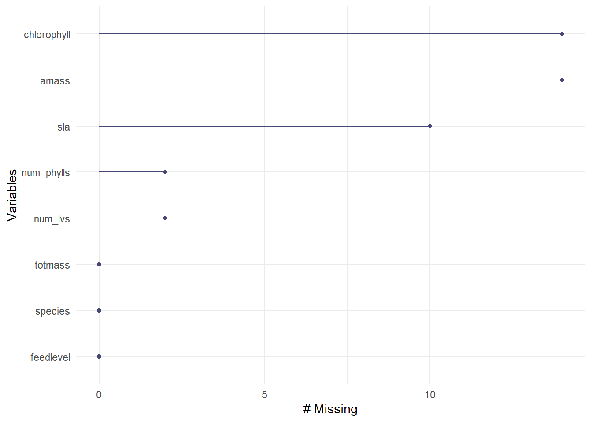
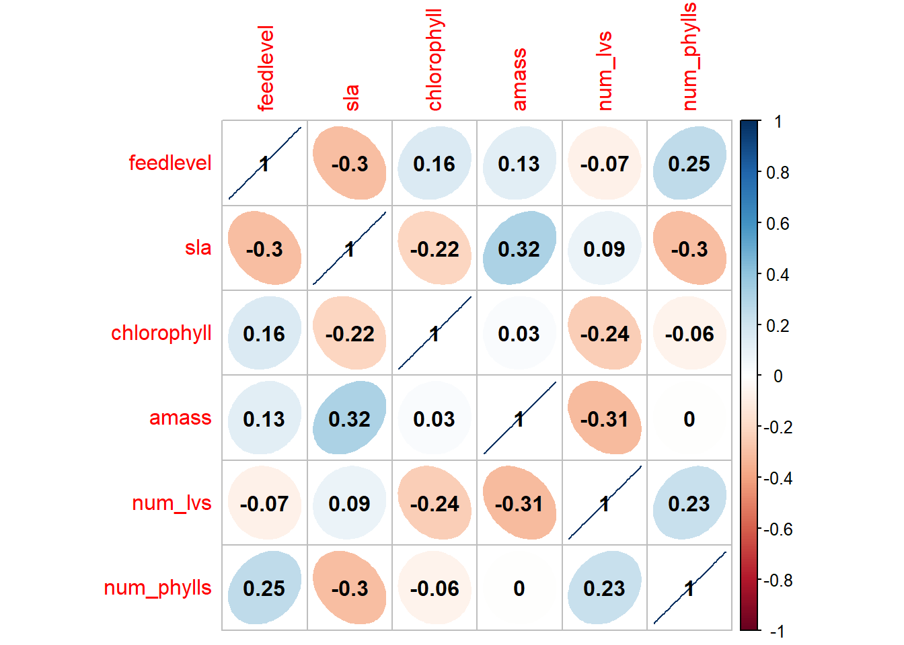
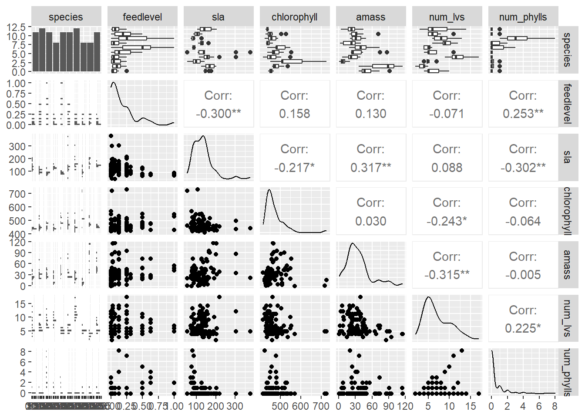
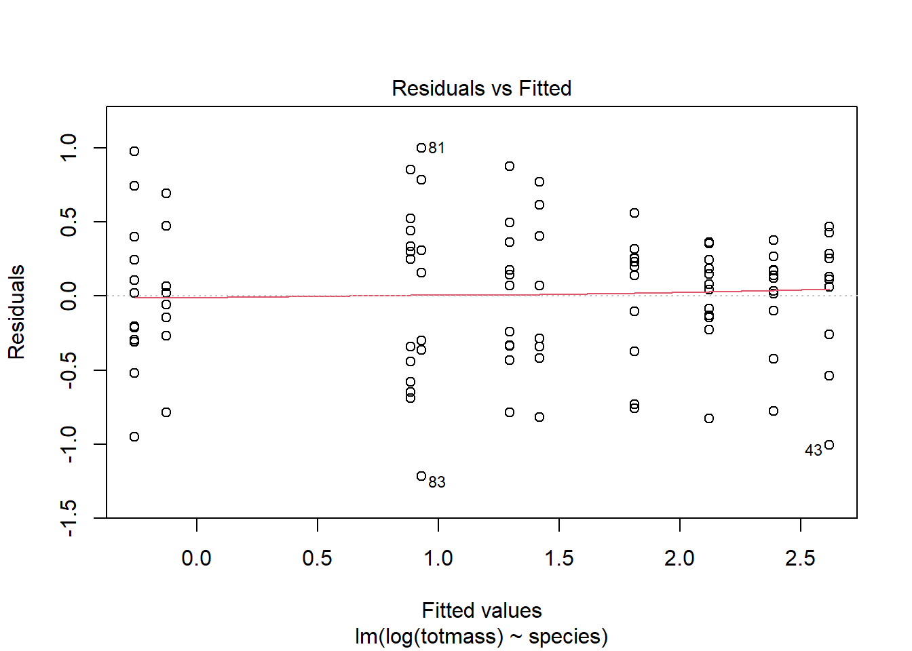
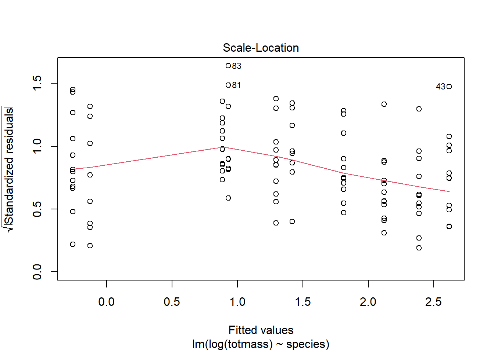
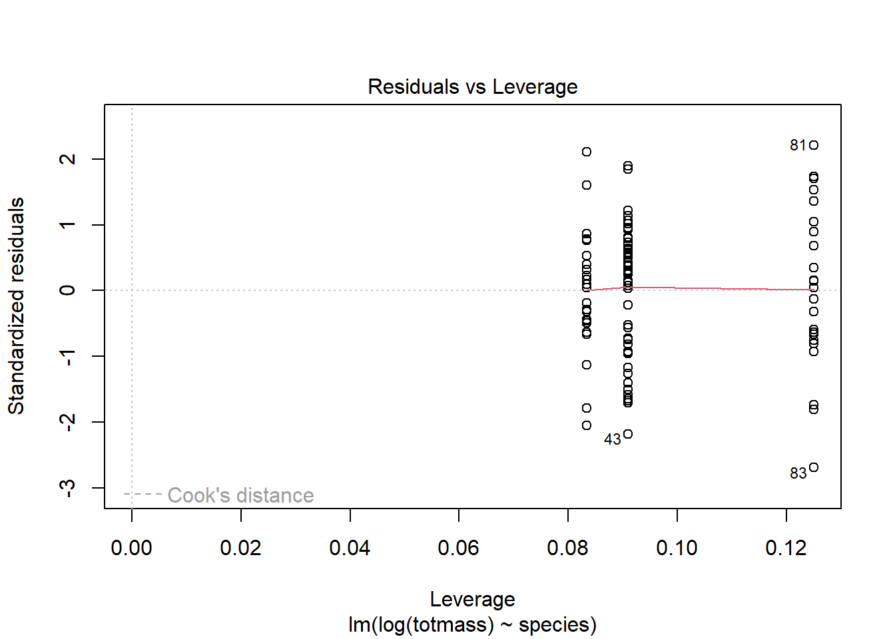

library(tidyverse)library(here)library(janitor)library(ggeffects)library(performance)library(naniar) # or equivalentlibrary(flextable) # or equivalentlibrary(car)library(broom)# would be nice to havelibrary(corrplot)library(AICcmodavg)library(GGally)library(MuMIn)
Read in data: Select subset of columns you would like to use
Code
plant <-read_csv(here("data", "knb-lter-hfr.109.18", "hf109-01-sarracenia.csv")) %>%#to make colunm names cleanerclean_names() %>%#selecting the list of columns to use/keepselect(totmass, species, feedlevel, sla, chlorophyll, amass, num_lvs, num_phylls)
Visualize the missing data:
Code
gg_miss_var(plant)

Subsetting the data by dropping NAs for the columns they show up in:
(example writing) To determine the relationship between numerical variables in our dataset, we calculated Pearon’s r and visually represented correlation using a correlation plot.
Code
#calculate pearson's r for numerical predictors, not response variables and not categorical variablesplant_cor <-plant_subset %>%select(feedlevel:num_phylls) %>%cor(method ="pearson")#creating a correlation plotcorrplot(plant_cor,#change shape of what's in the cellsmethod ="ellipse",#adds correlation coefficients, raddCoef.col ="black" )

Code
#size of circles represent strength of correlation and color indicates the direction of the correlation between the two variables, or in the case of ellipse which was they point is the direction
Create a plot of each variable compared against the others, not calculating anything
Code
plant_subset %>%#can now include categorical variables, putting the varibales on x and y axisselect(species:num_phylls) %>%ggpairs()

Starting regression here:
(example) To determine how species and physiological characteristics predict biomass, we fit multiple linear models. null is when no predictors are in the model, full is when all predictors are in the model
Code
null <-lm(totmass ~1, data = plant_subset)full <-lm(totmass ~ species + feedlevel + sla + chlorophyll + amass + num_lvs + num_phylls, data = plant_subset)
We visually assessed normality and homoscedacisity using diagnostic plots for the full model:
Code
par(mfrow =c(2,2))plot(full)
Code
#based on how clumped the residuals are int he beginning it is border line for homoscedasticity, moreso heterscedastic
We also tested for normality and homoskedasticity using the Shapiro-Wilk Test (null hypothesis is that the residuals are null hypothesis):
We tested for heterscedasticity using the Breusch-Pagan test (null hypothesis: the variable of interest has constant variance). (this is the performance package) remember to articulate what the test is, not the function.
Code
check_normality(full)
Warning: Non-normality of residuals detected (p < .001).
Code
#not normal and heteroscedasticitycheck_heteroscedasticity(full)
The assumptions are not met for multiple linear regression. We can mathematically transform the response variable to increase residual normaility. This changes all hypothesis to log, need to back transform later.
Code
null_log <-lm(log(totmass) ~1, data = plant_subset)full_log <-lm(log(totmass) ~ species + feedlevel + sla + chlorophyll + amass + num_lvs + num_phylls, data = plant_subset)full_log
OK: residuals appear as normally distributed (p = 0.107).
Code
check_heteroscedasticity(full_log)
OK: Error variance appears to be homoscedastic (p = 0.071).
Evaluate multicollinearity:
Code
#show GVIF generalized which is for categorical predictors, transformation to compare GVIF to VIF in the last column#means if there are predictors that are explaining more varince in your response variable because the predictor variables are interactingcar::vif(full_log)
We evaluated multicollinearity by calculating generalized variance inflation factor and determined that…
try some more models:
addressing the questions: what set of predictor variables best explains the response? this is a secondary question- not only do some predictor variables predict the response, but which combination. maximize explanation and minimizes complexity
Code
#this model only has one predictor that is species to predict total biomassmodel2_log <-lm(log(totmass) ~ species, data = plant_subset)
check assumptions for model 2:
Code
plot(model2_log)



Code
check_normality(model2_log)
OK: residuals appear as normally distributed (p = 0.374).
Code
check_heteroscedasticity(model2_log)
OK: Error variance appears to be homoscedastic (p = 0.100).
both conform to assumptions of linear regression! Each time you come up with another model, you must check all assumptions.
compare models using Akaike’s Information criterion (AIC) values:
Code
#looks for simplest model that explains the most variance, finding compromise between complexity and prediction#AICc is better for small sample sizes, in MuMIn package#look for model with lowest AIC valueAICc(full_log, model2_log, null_log)
#out of these three the full log has the lowest AIC
we compared models using AIC and chose the model with the lowest value which was…
Results
We found that the ____ model using ___ _____ ____ predictors best predicted ______(model summary) Use p value, r squared, f stat, alpha, etc (use summary function)
Code
#reference will be compared to the first categorical variable in data set#all are log transformed, but you can back transform by exponentiatingsummary(full_log)
#look at p value of predictors to see how much significance they havetable <-tidy(full_log, conf.int =TRUE) %>%#change the p-value numbers if they're really small, using mutate#chnage the estimates, standard error, and t-statistics to round to... digits#make it into a flex tableflextable() %>%#fit it to the viewerautofit()table
term
estimate
std.error
statistic
p.value
conf.low
conf.high
(Intercept)
-1.339043200
0.597726532
-2.2402271
0.027624109607483009
-2.527089405
-0.1509969955
speciesalata
1.113162580
0.184020930
6.0491086
0.000000035633453091
0.747401056
1.4789241035
speciesflava
1.404562038
0.262954818
5.3414577
0.000000728606298866
0.881910865
1.9272132117
speciesjonesii
0.319652351
0.196426010
1.6273423
0.107280978897063520
-0.070765614
0.7100703152
speciesleucophylla
1.709035391
0.227608275
7.5086698
0.000000000048774953
1.256639298
2.1614314841
speciesminor
0.389310367
0.187903472
2.0718636
0.041239074384119417
0.015831871
0.7627888636
speciespsittacina
-1.645197874
0.207034720
-7.9464830
0.000000000006356134
-2.056701798
-1.2336939506
speciespurpurea
-0.364347584
0.254380246
-1.4322951
0.155642631385408292
-0.869955868
0.1412607001
speciesrosea
-0.947383285
0.260494896
-3.6368593
0.000466976667424192
-1.465145097
-0.4296214723
speciesrubra
0.875341885
0.196361315
4.4578123
0.000024573993550445
0.485052508
1.2656312619
feedlevel
-0.474255269
0.234492879
-2.0224719
0.046198841611705246
-0.940335257
-0.0081752817
sla
-0.002493083
0.001160230
-2.1487826
0.034429589763780563
-0.004799167
-0.0001869994
chlorophyll
0.004368330
0.001189484
3.6724575
0.000414110175835848
0.002004101
0.0067325586
amass
0.002337656
0.002988210
0.7822929
0.436166480376765753
-0.003601736
0.0082770479
num_lvs
0.091763935
0.022413350
4.0941643
0.000094562482452723
0.047214976
0.1363128941
num_phylls
-0.039585071
0.051713890
-0.7654630
0.446067519262093981
-0.142372027
0.0632018848
use ggpredict() to back transform estimates
Code
#report results on the scale of the original variable, be transparent on the back transform you didmodel_pred <-ggpredict(full_log, terms ="species", back.transform =TRUE)model_pred
#all else held constant, you would expect these increases displayed in the model, with other variables held at their overall meanplot(model_pred, add.data =TRUE)